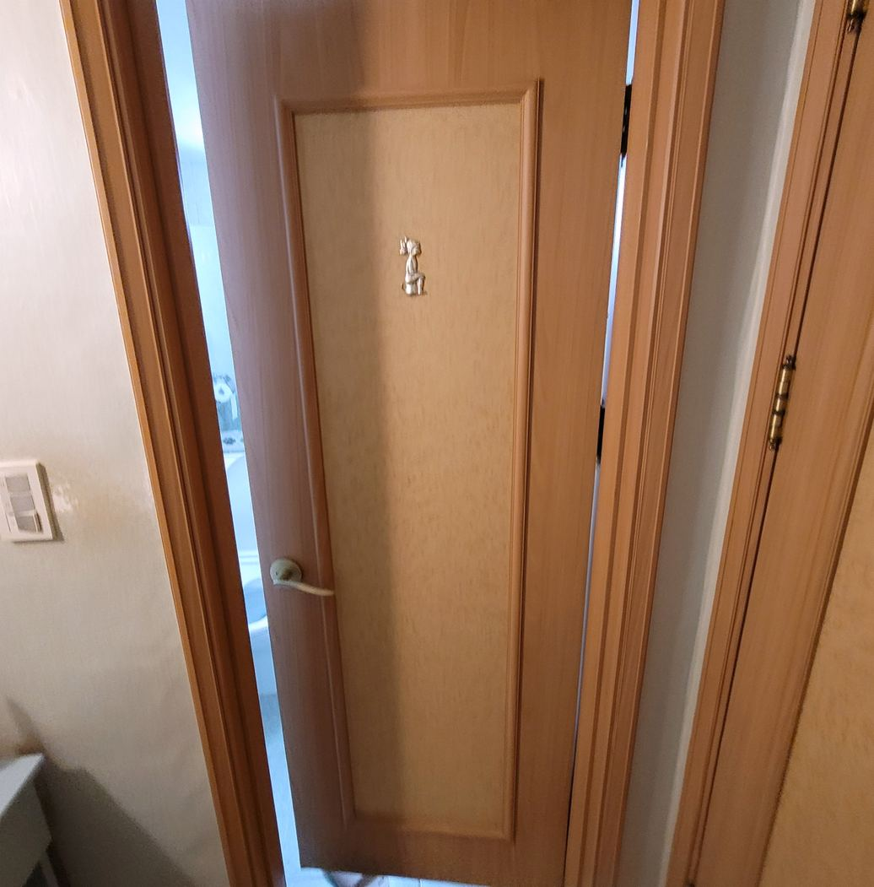
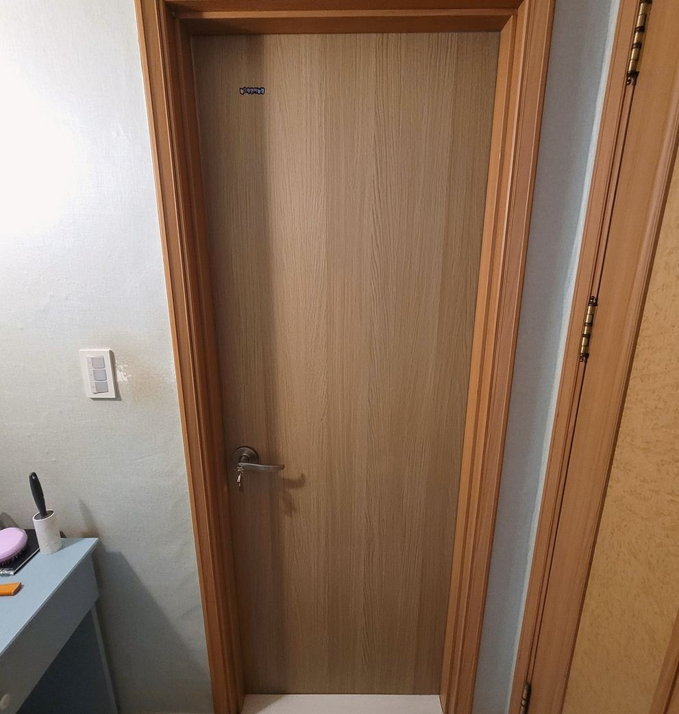
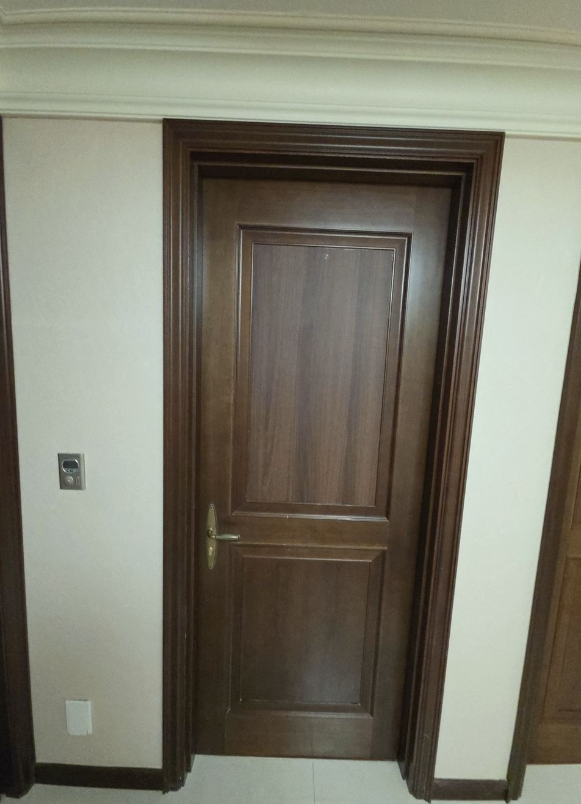

호매실 문짝교체
문틀은 그대로, 문짝만 바꿉니다
호매실 문짝교체를 알아보고 계신다면 문틀은 그대로 두고 문짝만 바꿔도 되는지부터 확인하는 게 순서입니다. 호매실은 2010년대 입주 단지가 대부분이라 아직 젊습니다. 그래서 노후보다는 생활 흠집·파손이나 욕실문 초기 습기 단계에서 문의가 들어옵니다. 초기일수록 문틀은 그대로 쓰고 문짝만 바꾸면 됩니다. 아래는 실제 시공 현장입니다. 시공 전 사진은 색이 바래고 마감이 낡은 기존 욕실문이고, 시공 후 사진은 새 문짝으로 교체해 문틀 색과 맞춰 마감한 상태입니다. 호매실 욕실문교체는 물에 강한 ABS 도어로 바꾸는 게 기본입니다. 습기를 먹어 부푼 문은 말려도 원래대로 돌아오지 않기 때문입니다. 호매실 방문교체는 색이 바래거나 흠집이 많은 문을 새것으로 바꾸는 작업이라, 한 짝만 바꿔도 방 분위기가 크게 달라집니다. 문틀이 수직으로 서 있고 상하지 않았다면 호매실 문짝교체는 문짝과 경첩만 바꾸는 방식으로 비용을 크게 줄일 수 있습니다. 호매실 욕실문교체든 호매실 방문교체든 문 전체가 나오게 사진을 찍어 문자로 보내주시면 방문 전에 어떤 방식이 맞는지, 금액대는 어느 정도인지 먼저 알려드립니다. 호매실 방문교체 문의도 사진 한 장이면 시작됩니다.
호매실 시공 전과 후
실제 현장 사진입니다. 비슷한 상태라면 참고해 보세요

색이 바래고 마감이 낡은 기존 욕실문

새 문짝으로 교체해 문틀 색과 맞춰 마감한 상태
호매실에서 자주 나오는 문제
호매실 욕실문교체·호매실 방문교체 문의 중 아래 경우가 가장 많습니다
욕실문 초기 습기
아직 부풀기 전 단계면 문짝만 교체로 끝납니다.
생활 흠집·찍힘
눈에 거슬리는 흠집은 그 짝만 교체하는 게 저렴합니다.
문짝 색상 변경
벽지·바닥을 바꾸면서 문 색만 맞추시는 분이 많습니다.
호매실 시공 사례
호매실 및 인근에서 진행한 호매실 방문교체·호매실 욕실문교체 작업입니다
초기 습기 단계
1짝 교체

바닥 톤 맞춤
사진 한 장에서 설치·폐기까지
- 문자로 사진 전송사진 확인 후 견적 비용을 말씀드립니다
- 필요시 방문 실측정확한 치수로 정밀 시공 · 현장 상담 가능
- 제작 후 일정 조율편하신 날짜로 방문 일정을 잡습니다
- 설치 · 기존 문 폐기호매실 현장에서 철거·수거까지 완료
호매실 화장실문교체 · 호매실 ABS도어
호매실 방문교체·호매실 문짝교체 문의 전에 아래를 먼저 봐 주세요
화장실문교체 · 욕실문교체
같은 작업입니다. 화장실문이라고 하셔도 욕실문이라고 하셔도 됩니다. 물에 강한 ABS도어로 바꾸는 게 기본입니다.
ABS도어와 일반 문의 차이
일반 문은 겉만 필름이고 속은 MDF입니다. 습기가 들어가면 부풀고 돌아오지 않습니다. ABS도어는 그 일이 없습니다.
방문교체는 분위기가 달라집니다
색 바랜 문 한 짝만 바꿔도 방이 달라 보입니다. 이사 전이나 전세 반납 전에 많이 하십니다.
호매실 문의 전 확인
호매실도 출장 오시나요?
네. 호매실 전 지역 방문합니다. 문 전체가 나오게 사진을 찍어 문자로 보내주시면 방문 전에 방식과 금액대를 알려드립니다.
호매실 욕실문교체는 어떤 문으로 하나요?
욕실은 물에 강한 ABS 도어를 씁니다. 표면이 플라스틱 계열이라 습기가 스며들지 않습니다. 나무 무늬 필름을 입힌 제품도 있어 겉보기는 일반 방문과 비슷합니다.
문짝만 바꿔도 되나요?
문틀이 수직으로 서 있고 상하지 않았다면 문짝과 경첩만 교체하는 게 맞습니다. 비용이 크게 줄어듭니다. 사진을 보내주시면 가능한지 먼저 판단해 알려드립니다.
기존 문은 어떻게 하나요?
저희가 수거해 갑니다. 대형폐기물 신고나 스티커 부착을 따로 하실 필요 없습니다.
한 짝만 교체해도 되나요?
가능합니다. 흠집이나 파손이 한 짝에만 있으면 그 짝만 바꾸는 게 저렴합니다. 다만 색이 미묘하게 다를 수 있어 미리 샘플로 확인해 드립니다.
호매실 화장실문교체는 어떤 문으로 하나요?
물에 강한 ABS도어를 씁니다. 안에 나무가 없어 습기를 먹지 않습니다. 나무 무늬 필름 제품도 있어 겉보기는 일반 방문과 비슷합니다. 화장실문교체에 일반 문을 다시 달면 몇 년 안에 아래가 또 부풉니다.
호매실 방문교체는 한 짝만도 되나요?
됩니다. 흠집이나 파손이 있는 짝만 바꾸는 게 저렴합니다. 다만 오래된 문과 색이 미묘하게 다를 수 있어 시공 전에 샘플로 확인해 드립니다.
호매실 문짝교체비용은 어떻게 정해지나요?
문 크기, 소재(ABS도어인지 일반 문인지), 손잡이와 경첩을 새로 쓰는지에 따라 갈립니다. 문틀을 손대지 않으면 비용이 크게 줄어듭니다. 문 전체와 문틀이 함께 나오게 사진을 찍어 보내주시면 방문 전에 금액대를 알려드립니다.
호매실 ABS도어 교체는 얼마나 걸리나요?
문짝 한 짝은 보통 한두 시간이면 끝납니다. 여러 짝을 한 번에 하시면 한 번 출장으로 정리되어 더 효율적입니다.
문틀까지 바꿔야 하는 경우도 있나요?
문틀 아래가 물을 먹어 물러졌으면 그 구간만 잘라내 보수합니다. 문틀 전체를 교체하지는 않습니다. 벽 마감까지 뜯게 되어 공사가 커지기 때문입니다.